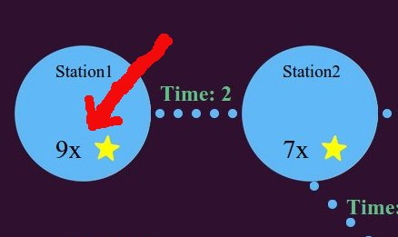
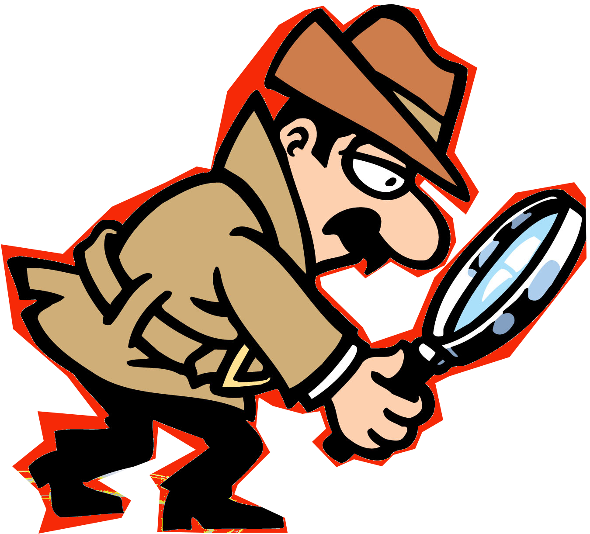
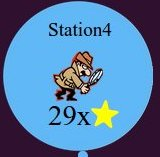
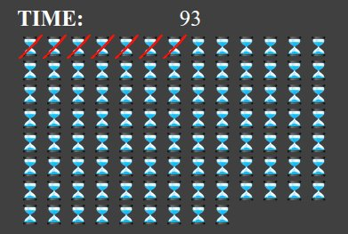

INSTRUCTIONS:
Overview
The game is set in a Metro line. You will play the role of a treasure hunter who is select station(s) on the Metro trains to gather some treasures which are represented as stars.
There are also officers in the metro line who are looking to prevent you from getting the stars. You will be given information about the presence of officer at the station. If there is an officer at the station, you cannot have the stars but you can continue playing the game.
So, the idea is to play a game in the limited time you are given, visiting stations to gather stars, which you can only get when there are no officers at the station.
Consider that officers may move from one station to another. At the beginning of the game, we will provide some potential officer patrol patterns.
The game ends in one of two ways: (1) you run out of time or (2) the game randomly ends after your visit a station.
More details regarding 'how to play the game' are provided on the next page.
Rounds & Compensations
Study Tasks:
You will play 6 games and answer a few survey questions. This will take approximately 30 minutes in total. The first 2 games will be trial games. These trial games will not affect your compensation. They will help you familiarize yourself with the game interface. The next 4 games are actual games that will determine your compensation.
Compensation Details:
You can earn 2 types of compensation for participating in our experiment. Please read carefully the details below.
Base: You will be given $1 for participating in this round of the experiment.
Performance Bonus: In addition, for every star earned, you will get $0.01.
Treasure (Stars) & Hunter (you)
There are some stars at each station. There will be different numbers of stars at different stations.
For example, there are 9 stars at station 1 and 7 at station 2.

This icon represents you. Your first station will be chosen randomly and then you can choose to stay or move to other station.


Score
After selecting a station, your icon will move to the selected station (or stay still if you choose the same station). Then, you will be informed if there is an officer at the station or not.
If there is an officer at the station, you cannot have the stars at that specific station.
If there is no officer, the color will be changed to green, and you get the stars, which will be added to your score board.
Game Termination
Please consider that you have a limited time to play the game. You will begin with 100 time units, represented by hourglasses. For each instance that you select a station, your available time will be reduced by 1 hourglass. It also takes time to travel from one station to another.

Also, after checking any station, there is a chance that the game will end, independently of the amount of time remaining. The chance that your game will end is shown by the Termination Randomizer roulette. If the arrow stops at the red area, the game is over. If it lands on green area you can continue playing the game.
Summarizing, there are two situations that will end your game:
(1) After checking a station, the yellow arrow lands on red are in the Termination Randomizer roulette;
(2) You run out of available time.